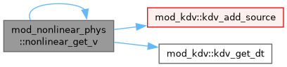
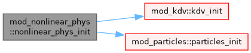

mod_nonlinear_phys Module Reference
Module containing the physics routines for scalar nonlinear equation. More...
Functions/Subroutines | |
| subroutine, public | nonlinear_phys_init () |
| subroutine, public | nonlinear_get_v (w, x, ixil, ixol, idim, v) |
Variables | |
| integer, public, protected | rho_ = 1 |
| index of the single scalar unknown | |
| integer, public, protected | nonlinear_flux_type = 1 |
| switch between burgers (i.e. rho**2) or nonconvex flux (i.e. rho**3) | |
| logical, public, protected | kdv_source_term = .false. |
| whether the KdV source term is added | |
| logical, public, protected | nonlinear_particles = .false. |
| Whether particles module is added. | |
Detailed Description
Module containing the physics routines for scalar nonlinear equation.
Function/Subroutine Documentation
◆ nonlinear_get_v()
| subroutine, public mod_nonlinear_phys::nonlinear_get_v | ( | double precision, dimension(ixi^s, nw), intent(in) | w, |
| double precision, dimension(ixi^s, 1:^nd), intent(in) | x, | ||
| integer, intent(in) | ixi, | ||
| integer, intent(in) | l, | ||
| integer, intent(in) | ixo, | ||
| l, | |||
| integer, intent(in) | idim, | ||
| double precision, dimension(ixi^s), intent(out) | v ) |
Definition at line 166 of file mod_nonlinear_phys.t.
Here is the call graph for this function:

◆ nonlinear_phys_init()
| subroutine, public mod_nonlinear_phys::nonlinear_phys_init |
Definition at line 61 of file mod_nonlinear_phys.t.
Here is the call graph for this function:

Variable Documentation
◆ kdv_source_term
| logical, public, protected mod_nonlinear_phys::kdv_source_term = .false. |
whether the KdV source term is added
Definition at line 16 of file mod_nonlinear_phys.t.
◆ nonlinear_flux_type
| integer, public, protected mod_nonlinear_phys::nonlinear_flux_type = 1 |
switch between burgers (i.e. rho**2) or nonconvex flux (i.e. rho**3)
Definition at line 13 of file mod_nonlinear_phys.t.
◆ nonlinear_particles
| logical, public, protected mod_nonlinear_phys::nonlinear_particles = .false. |
Whether particles module is added.
Definition at line 19 of file mod_nonlinear_phys.t.
◆ rho_
| integer, public, protected mod_nonlinear_phys::rho_ = 1 |
index of the single scalar unknown
Definition at line 9 of file mod_nonlinear_phys.t.
Generated by